spinesurg-ct-nnunet · paper/rsnai/figures · 22 September 2026, 20:12
Every figure on disk tonight
The composite page, each rebuilt row at full resolution, and the three audit figures. Paths are
in the repository on branch L6_Class. The manuscript assembler copies its chosen
set into SchwingNet/figures/ when it finishes.
The composite below was stacked at 19:31. Two rows were re-rendered at 20:12 to remove the
algebraic rule (anatomy, fluoroscopic localisation); the individual row images further down are the current
ones, the composite is not yet restacked.
The composite, tall version for reading on screen
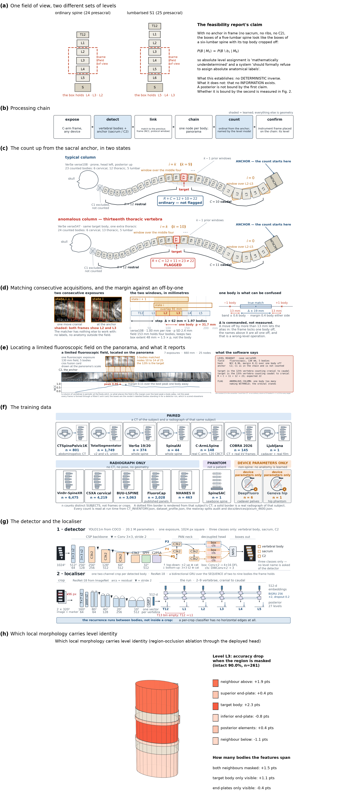
compositefig1_story_tall.png — the rows as stacked by
tools/fig_story_compose.py before the rule removal. The one-page manuscript
version is fig1_story.png; for submission this splits into figures of at most
four components.
Each row, current
aThe ambiguity. The same three-body window holds L4·L3·L2 in an ordinary
spine and L5·L4·L3 in one with a lumbarised S1. This is the off-by-one that becomes wrong-level surgery.
fig1_problem.png
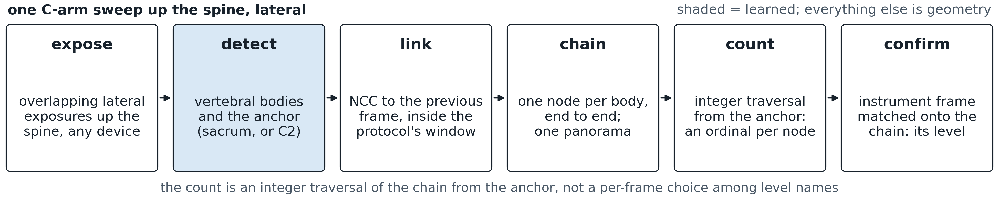
bProcessing chain. Expose, detect, link, chain, count, confirm; shaded
boxes are learned, the rest is geometry. fig1_row1_pipeline.png
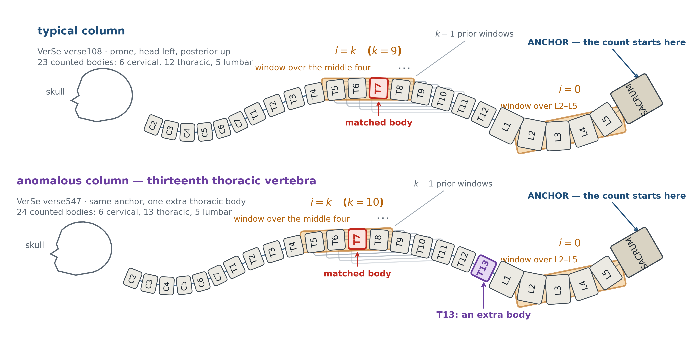
cre-rendered 20:12The count walking up the
spine. Two real VerSe columns (verse108, 23 bodies; verse547, 24 with a thirteenth thoracic), the initial
window on L2–L5 and the k-th window with the prior windows shingled behind it, the sacral anchor, the skull.
The rule annotations are gone; the extra body is now marked directly.
fig1_row2_anatomy.png
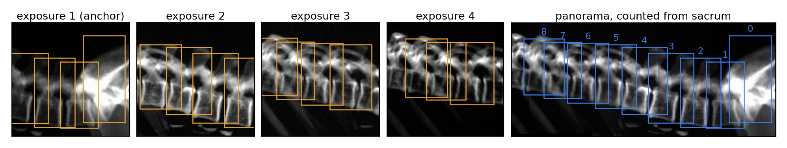
c′The sweep on a real render. Four overlapping exposures on a prone
patient and the panorama counted from the sacrum. fig1_row2_stitch.png
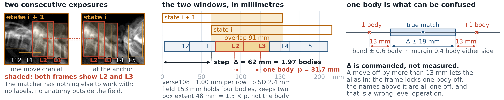
dmillimetres under reviewMatching consecutive
acquisitions. The shared bodies shaded in both windows; the window step against the body pitch. The
millimetre values come from verse_drr, whose spacing is suspected ~15 % short by
the row-spacing defect of 19 September — checklist item A8 — so none of them is quotable yet.
fig1_row3_overlap.png
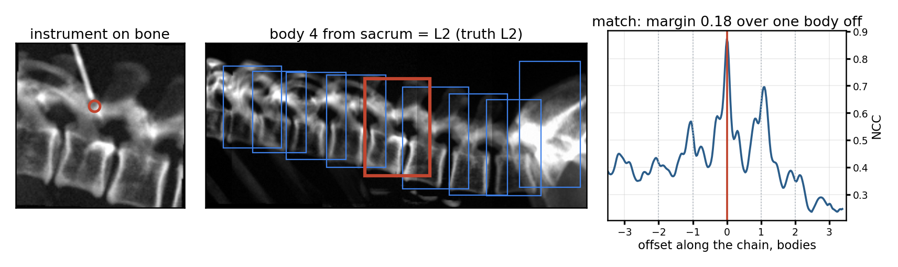
eConfirmation on a render. Instrument frame, the chain with the located
body, and the correlation along the chain with a margin of 0.18 over one body off.
fig1_row3_confirm.png
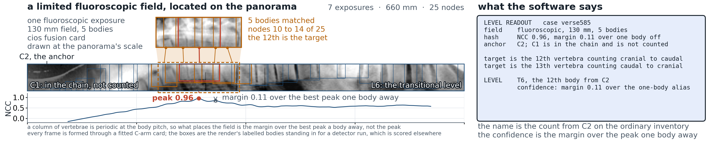
fre-rendered 20:12Fluoroscopic
localisation. The narrow field mapped onto the panorama, with the readout the software gives: the i-th
vertebra cranial-to-caudal, the j-th caudal-to-cranial, the assigned level and its confidence. The rule line
is gone. fig1_row4_fluorohash.png
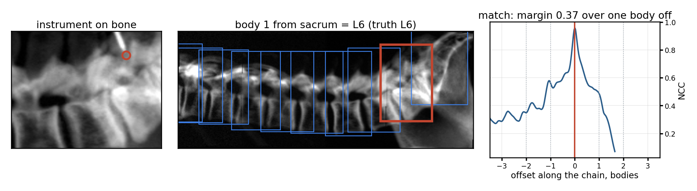
gConfirmation on styled frames. The same confirmation on frames styled by
the Cios Fusion card; a sixth lumbar vertebra counted from the sacrum, margin 0.01 — honestly a weak one.
fig1_row6_confirm_fluoro.png
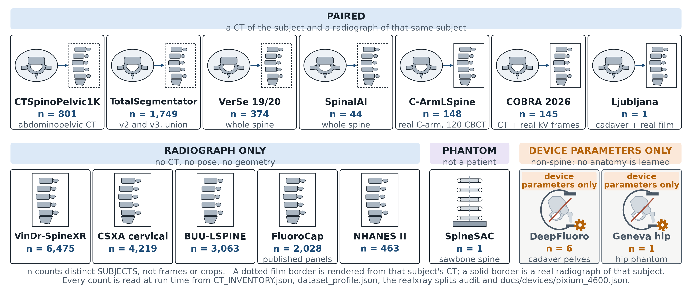
hWhat the training data is. CT→X-ray for paired sets, X-ray alone for
pure film, a stick-figure spine for phantoms, and a device-settings-only marker for non-spine C-arm data.
fig1_row5_corpus.png
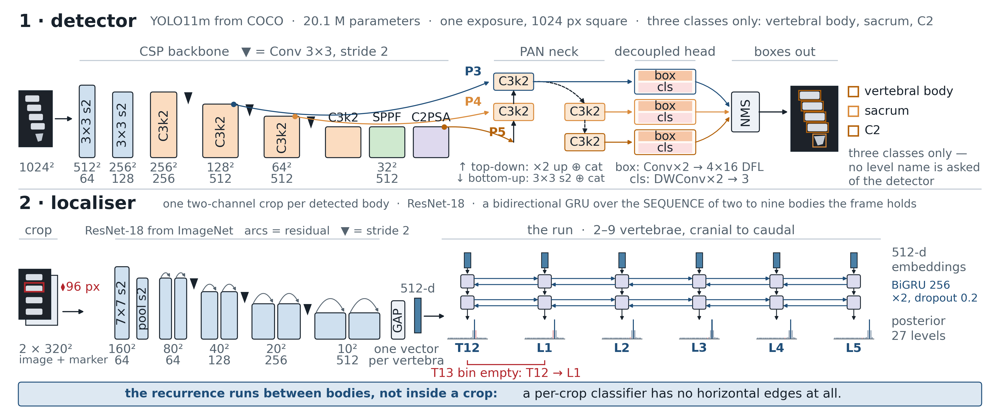
iThe two networks. The detector (1024 px, CSP backbone, PAN over three
scales, decoupled head) and the localiser (96 px crop plus target channel, ResNet-18, BiGRU over two to nine
bodies, 27-level posterior). fig1_row6_arch.png
jWhich morphology carries level identity. Accuracy lost at L3 when each
region is masked: the target body and the neighbour above matter most; end-plates barely.
fig13_feature_cartoon.png
The audit figures
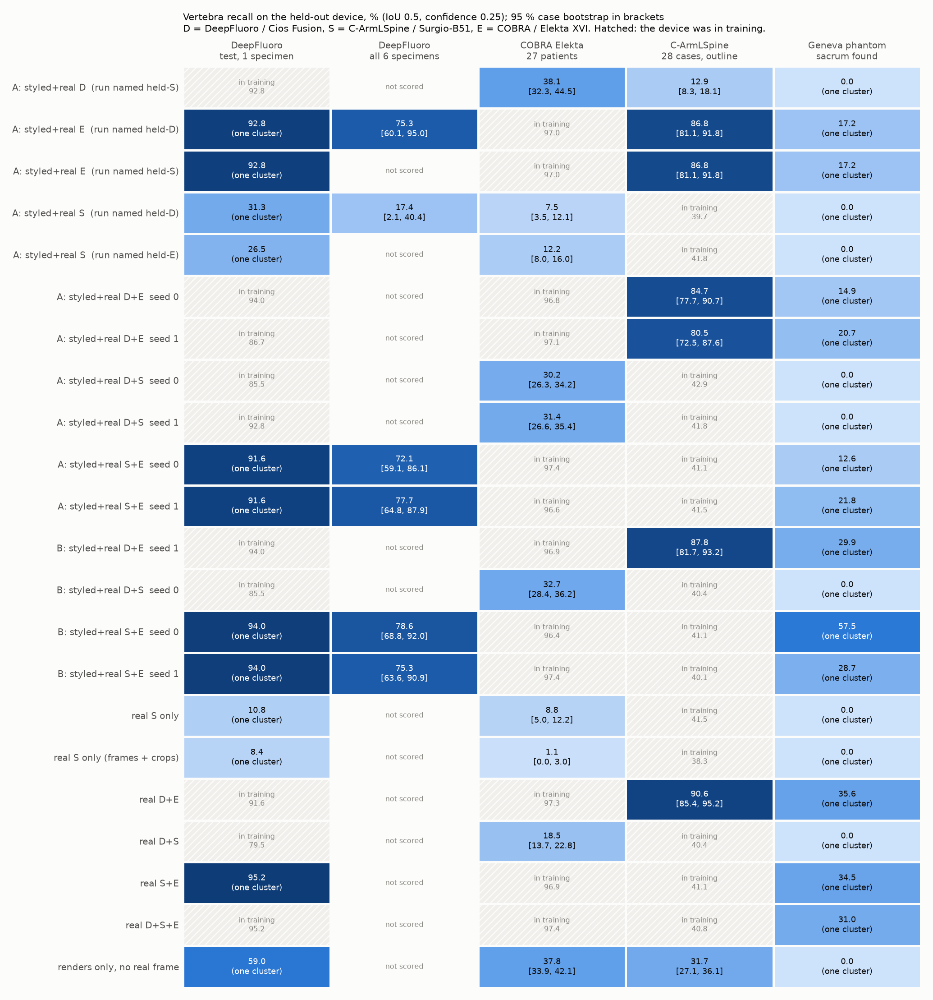
new tonightWhich training data contributes. Held-out device against
training set, from the single-device, two-device, all-device and pooled detector runs. This is the figure that
answers the DeepFluoro question; its text is in SchwingNet/results/DATA_CONTRIBUTION.md.
SchwingNet/figures/fig_contribution.png
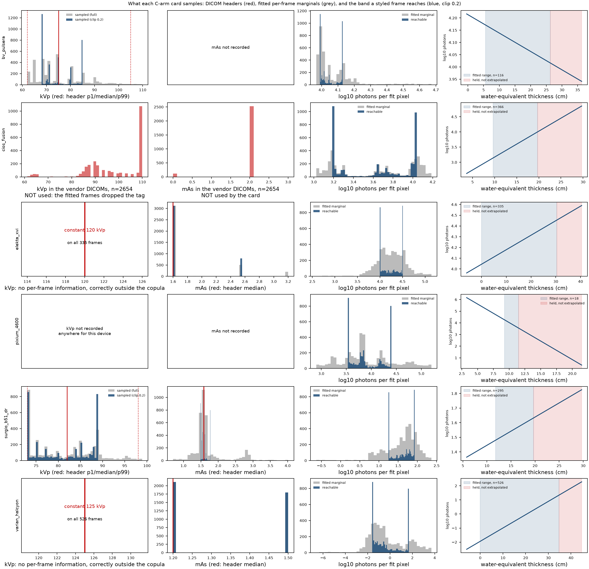
What each C-arm card samples. Header distributions in red, fitted marginals in grey, and
the band a styled frame reached under the clip in blue — the stacked spikes are the saturation defect.
docs/figures/fig_device_params.png
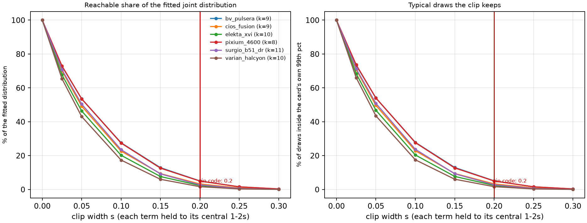
How much of the learned distribution a frame reached. 1.7–5.1 % of the joint at the clip
width in code; the typicality gate reaches 99 %. docs/figures/fig_device_spread.png